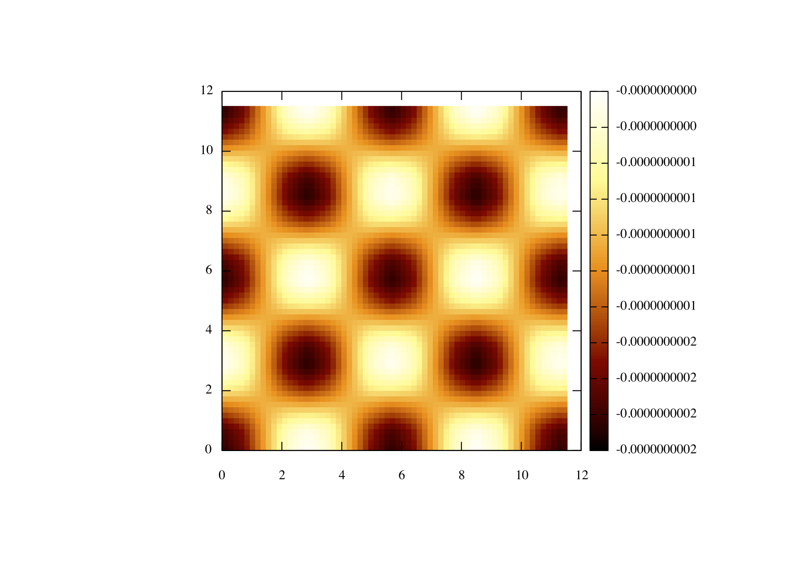

Interpolation and Scanner circuit
In this tutorial you will learn how to use both the interpolation and scanning circuits, we will be interpolating the force field file named "NaClforces.dat" located in the tutorial folder.
So lets start as we did before with our mandatory imports and define our machine;
So now we must add both the Interpolation and the Scanner circuit in the usual manner;
The only thing here worth noting is the "components" parameter, this is how many components we have in the force field, so in this case (as we will see later on) we have 3 (fx,fy and fz).
Lets start configuring the interpolation circuit, first we must set the step size with the steps parameter. The force field is in the format of :
1 1 1 fx fy fz
1 1 2 fx fy fz
.. .. .. .. ..
.. .. .. .. ..
x y z fx fy fz
Where x y and z are the index of that particular point in the force field, so in order to allow the scanner to moved in the correct units we must change these indexes to what ever the correct step size is. In this case the step in x and y is 0.705 and the step in z in 0.1. Next we must define the number of points in each dimension using the "npoints" parameter in this case we know that the x and y axis both contain 8 points each and the z direction contains 201 points.
At this point we are going to set the periodic boundary conditions using the "pbc" parameter;
So here we have set the boundary conditions to be periodic in the x and y direction but not in the z. Next we have to tell the interpolation circuit what the force field is called;
So we have told the interpolation circuit that the file is called "NaClforces.dat" and this file must be in the format described previously and located in the same folder as the input file.
So now that we have configured the interpolation circuit we must now connect the x y and z output channels of the scanner to the x y and z input channels of the interpolation, as shown below;
next we must set up our output circuit again this is done in the same way as before but take note we set "dump=0" because we plan to use the ScanArea feature of the PyVAFM and we are using the output channel F3 which corresponds to third component in the forcefield.
Since we plan to use the ScanArea feature we must now connect the record output channel of the scanner to the record input channel of the output circuit;
Now that we have finally set up our machine we can now start issuing commands to it, we will only be using a hand full of the scanner commands although more can be found on the documentation webpage.
lets start by placing our scanner in the force field at position 0,0,4;
In order to use the ScanArea function we must also tell the scanner what output circuit we plan to use with the Recorder command;
If you plan to use gnuplot then we suggest you use this line so that it can plotted with ease using gnuplot;
All this does is print blank lines at the end of every row, more information can be found in the gnuplot documentation on how to plot 3d data.
Next we will set the resolution of our image as 64 points per line and 64 lines;
Now we will set the area that we will scan over;
Finally all that remains is to initialise the ScanArea function;
The final input script should look like this;
So assuming you are using gnuplot use the following commands in order to plot the image
set pm3d set size square set palette rgbformula 34,35,36 sp "tut2.dat" using 1:2:3
You should get something that looks like this;
 1.8.5
1.8.5